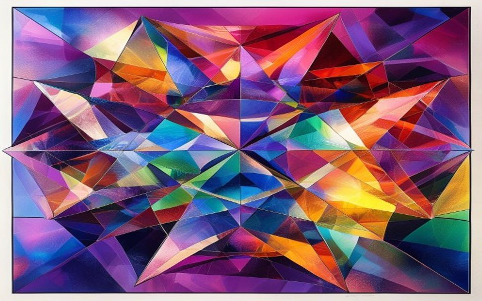
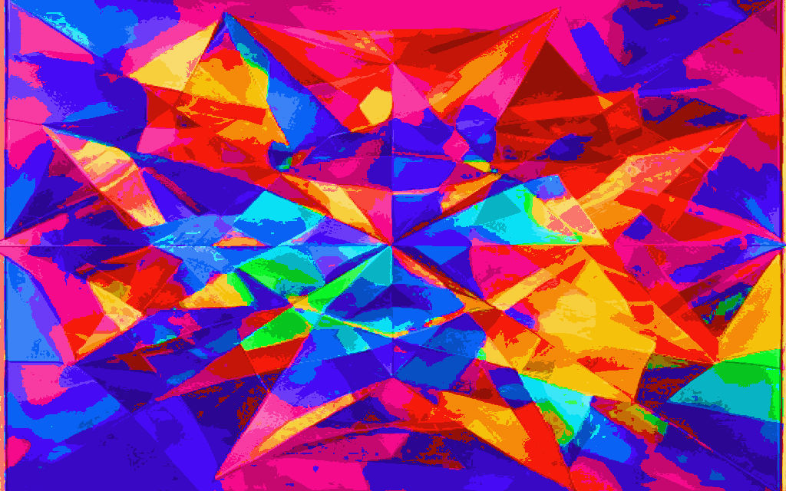
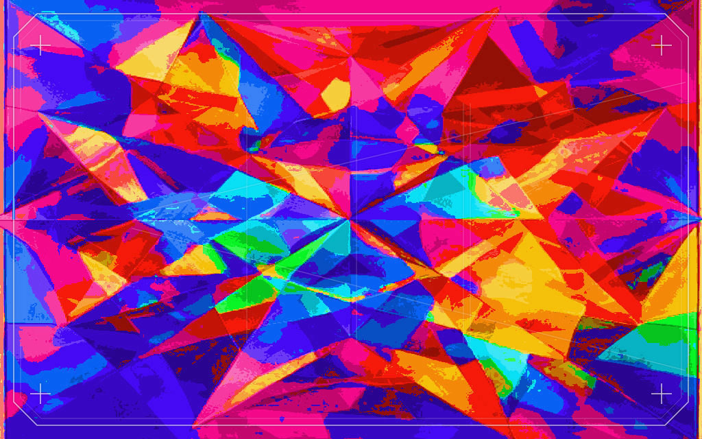

Atelier № 06 · Prism
Colour, cut and mounted — the toolkit presented like a maison presents a collection.
Eleven evidence-based design skills, each a numbered colour-plate: exuberant geometry — wedge, disc, slab — crossing on one fixed angle grid and multiplying into deeper, unrepeatable hues, mounted on a bright ivory mat and framed with a single hairline. The colour is the garment; the plate is its label. The joy is full-strength; the finish is exact.
The style · what it is & when to use it
Prism renders design·craft as a maison's colour-plate portfolio — the round-3/9 joy of saturated geometry, elevated to luxury by the poise of the framing, never by dulling the colour. Bold forms overlap and multiply into new hues; content rides small geometric plates that hover on the colour. The page is fully legible — every word is read on the colour (near-black ink on a saturated hue) or in it (light ink in a deep colour-well).
Register — confident · exuberant · precise · expensive · playful-yet-impeccable. Riotous colour held in a couturier's exact hand: one hairline weight, one cool metal, museum matting. The tension is the brand.
Developing-style · the invented look
Developing-style invents a look that is ownable — the specialist you reach for when a design keeps landing generic or derivative, or a brief asks for something unlike convention. It runs four moves, in order: map the convention you would otherwise default into; imitate-then-deviate from an unfamiliar domain (a familiar exemplar fixates the eye, an unfamiliar one restructures it); reduce to a small, repeatable vocabulary; and hold a few constants — the hand lives in minor handling repeated across everything, not one hero flourish.
This is the exact method that produced ATELIER. Decompose Prism through the four moves and its distinctiveness becomes reproducible on every plate.
demo · Prism's formation story, in four moves
Composition · the arrangement
Composition owns the arrangement — where every mark sits and why, so the whole field reads as one deliberate piece and not an inventory of parts. The load-bearing idea: meaning lives in the arrangement, not the pieces. Three identical lines become a triangle, an "H," or a table depending only on how they are joined. This lever holds hierarchy, gestalt grouping, figure-ground, tension and the structural signature — under one governing rule: name the single takeaway, then make every element serve it, effortlessly, or cut it. Its two moves are fusion (principles compound into one effect) and juxtaposition (principles set in tension, the friction being the subject).
Reach for it to compose any artifact where arrangement carries meaning — a poster, an identity, a data report, a screen — or to diagnose why a layout reads generic, cluttered or derivative. It defers colour to perception, type to typesetting, chart-forms to charting, screen navigation to ux.
Demo · this page is the specimen — its figure-ground flip, annotated
1 · The field is the ground. Hard-edged saturated wedges, discs and slabs multiply into new hues (the round-9 hand), filling the whole page — colour carries the piece, it is never garnish.
2 · The plate is cut in and lifted. A geometric coloured plate hovers, carrying ink at AA. Figure-ground is engineered: the reading plate reads as figure, the colour as ground — vivid and fully legible at once.
3 · The mounting is continuity. One grid, one hairline, even field gutters around every plate; scrolling moves you through one mounted collection, binding twelve plates into a single reading.
4 · The eye-path is hierarchy. Enter at the folio, drop through the Fraunces title to the terse body — one takeaway per plate. A fusion (grid + similarity) wrapping a juxtaposition (calm plate vs vivid field).
Colour · encoding & perception
Colour decides the encoding before the colour, and contrast before hue. It owns the palette systems (sequential / diverging / categorical), the ground, the single reserved accent, contrast and colour-vision-deficiency safety — and holds two floors that never bend: WCAG AA (4.5:1 body, 3:1 large) and never colour alone to carry meaning. On the perceptual hierarchy, position and length beat area and colour for anything read as a value.
This plate is the demonstration: a maximally chromatic page, fully legible — reading lives ON the colour (near-black ink on a saturated hue) and IN the colour (light ink in deep colour-wells). Ivory plates are the exception, not the rule. Two measurements tell the honest full story: the hue fails as ink on white, and passes as a ground under near-black ink.
Two measurements — hue fails as ink, hue passes as ground
Encoding, right and wrong · Cleveland & McGill 1984 · WCAG 1.4.1
CVD-safe by construction. Up to ~8% of men have a colour-vision deficiency, so hue is never the only cue. The chromatic field is decorative and aria-hidden — it carries no data. Every plate's identity rides on its foil folio number and its name in ink, never on hue. Simulated through deuteranopia and protanopia the reading is identical: meaning rides on the ink's luminance. And the one pop is the page's single achromatic datum — a gunmetal readout among pure colour — so it survives every CVD type, because a grey stays grey.
Typography · the reading voice
Typography decides whether the words get read at all. Before voice or mood it spends the proven levers: a comfortable size with enough x-height, a sane measure, generous leading, a clear hierarchy. The face sets voice — and voice is taste, not speed. No font reads reliably faster, and a reader's preference does not predict how fast they read it. The couture register runs five voices, each with one job.
01 · display — Fraunces
Colour, cut & mounted
The couture serif — masthead and plate titles. High stroke-contrast is the expensive-editorial signal. It never sets a paragraph.
02 · accent — Instrument Serif italic
the atelier's aside
The couture pull-line — a collection sub-title, one delicate italic voice used sparingly.
03 · structure — Space Grotesk
Plate · Folio · Tombstone
The Bauhaus grotesque — all chrome: eyebrows, folios, tombstones, the running index. Precision voice.
04 · body — Plus Jakarta Sans
The reading face — every paragraph and caption; deliberately quiet so the serif and colour carry the drama.
05 · notation — IBM Plex Mono
MMXXV · 08·03·01 · 11·9:1
The tabular readout — figures, ratios, editions, with the mid-dot separator. Tabular, exact.
the modular scale · ×1·250 · Fraunces + Jakarta + Plex Mono
the readout figures · lining · tabular · slashed 0 · mid-dot
0 1 2 3 4 5 6 7 8 9
Data wants figures built to be read at a glance — a footed 1, a straight-leg 7, open 3/9, and a slashed 0 distinct from O. The column below is right-aligned on tabular figures, so every mid-dot stacks into one column.
| hue | fill | w/ ink | carries |
|---|---|---|---|
| yellow | #ffd029 | 11·90:1 | body ✓✓ |
| green | #5ed06b | 8·91:1 | body ✓✓ |
| orange | #ff9415 | 7·90:1 | body ✓ |
| teal | #13b6c6 | 7·10:1 | body ✓ |
| magenta | #ff43ab | 5·52:1 | body ✓ |
| red | #ff4a3d | 5·24:1 | body ✓ |
Measure held to the 45–75-character band (≈66ch here); prose leads at ~1·6× the body size, display tightens toward 1·03×. Set in Fraunces · Instrument Serif · Space Grotesk · Plus Jakarta Sans · IBM Plex Mono — self-hosted Latin-subset WOFF2 via fonts.css, font-display:swap, each with a named system fallback.
Charting · the honest form
Charting picks the graphical form that answers the question — trend, comparison, ranking, distribution, relationship, part-to-whole, deviation — then renders it so nearly all the ink is data. The craft is subtractive: erase the border, the background fill, the heavy gridlines; let a range-frame report the data instead of a grid; label each mark directly, not through a legend the eye must ferry back and forth; reach for position before length, and length before area or colour.
The floor is honesty: no truncated baseline that inflates a difference, no area standing in for a length, no dual-axis trick. Charting owns the form and its honesty; the exact hues defer to colour. Dense reading lives in a deep colour-well — light ink at 9:1.
Demo · Cleveland dot plot — a comparison on a true zero baseline
the atelier's regional revenue · FY MMXXV · $M · sorted by value
Sorted by value; dots share one baseline so length reads true. The change rides alongside — never a truncated axis inflating a small gap. Position on a common scale is the most accurate encoding there is.
Demo · range-frame line — when a forced zero would understate the signal
house valuation index · 2019–2025 · a ratio with no meaningful zero
Why a range-frame, not a zero baseline. The index is a ratio with no meaningful zero, so the axis is drawn only across the measured span, 1·08–1·53 — the data's own min and max. Forcing the y-axis to zero would compress a real 42% rise into a near-flat line and understate the very movement the chart exists to show — here the dishonest move is the forced zero, not the tight frame.
Imagery · the picture lever
Imagery is the picture lever. It selects a photograph or illustration, critiques candidates in a like/not loop, directs light, code-feasible treatment (duotone, colour-grade, scrim, crop), decides photo vs illustration, writes the alt text, and makes light programmatic illustration in code. It does not generate photographs and is not a heavy retoucher. One test governs every image: it must carry the message — decorative filler measurably lowers comprehension and gets skipped as stock.
Prism's stance — coded geometric illustration. The subject is the atelier's own logic — the three forms crossing and multiplying — so a drawn SVG in the same hand as the collection beats a stock photo: precise, ownable, hard-edged, on a high-key ground; honest geometry, no invented depth.
Specimen · the imagery hand — wedge × disc × slab → a born hue
The illustration above is informative: its meaning rides on role="img" + aria-label. A screen reader announces the label, never the picture. That is the alt-text floor imagery owns — role decides the alt, not the pixels:
Informative → describe the point. The figure above. Carries meaning, so it earns a label that states what it shows — not the word "image."
Decorative → aria-hidden. The chromatic field behind this plate carries no message. Empty alt, skipped cleanly.
Functional → describe the action. A picture that is a link or button gets alt for what it does ("next plate"), not what it looks like.
UX & layout · the structure
This lever owns the structure a design is read through — page skeleton, navigation, the grid, the spacing rhythm, and the visual hierarchy that decides where the eye lands first, next and last. Under every rule sits one mechanism: processing fluency — the easier a screen is to find your way around, read and act on, the more it gets used. It hands chart forms to charting and every colour decision to colour; it keeps the layout, the wayfinding and the interaction.
It also holds the hard floor no other lever may cross: AA contrast, a visible keyboard focus ring on every control, and a ≥44px hit target — design-craft's house floor above WCAG's 24px minimum. Below, those floors are shown, not claimed.
Component demo · collection controls — floors shown, not claimed
collection view · segmented control — three views · PLATES active
edition registry · native table, tabular figures, right-aligned
| plate | skill | fill | AA |
|---|---|---|---|
| II | Composition | yellow | 11·90 |
| III | Colour | green | 8·91 |
| V | Charting | teal-well | 9·01 |
| VII | UX | prussian | 9·85 |
| X | Generative | wine-well | 11·62 |
actions · default · focus · disabled
Selected state is never colour alone — the active view is a solid fill + an accent underline + the pressed word (CVD-safe). The loudest action is contrast, not hue. Everything aligns to one grid: a shared left edge reads as order and lowers reading cost (fluency); one spacing step does the grouping (gestalt proximity); the 45–75ch measure is the readable-line convention.
Branding · the identity layer
Branding is the identity layer. It decides what the mark should be — its concept, personality fit, complexity budget, redesign risk — and whether every surface reads as one voice. It is advisory, not a paint tool: it directs and polices the identity, then hands the making to the specialists — drawing to imagery, style invention to developing-style, image generation to generative-imagery. Every claim carries a named study and a confidence label, so taste never masquerades as proof.
Demo — the Trinity Seal: the three Bauhaus primaries — wedge, disc, slab — locked into one interlocking monogram whose overlaps multiply into a born hue at the crossing. It is the whole page in miniature, and it must survive to the 16px favicon.
Shape
Angular + one curve
Two hard-edged forms plus a single disc. Angular marks lift hard attributes — precision, durability — carrying the competence half of the register; the saturated multiply-born hue carries the exuberance, so the mark reads as rigor and joy at once.[ESTABLISHED] Jiang, Gorn, Galli & Chattopadhyay 2016 · JCR
Descriptiveness
Descriptive of the method
The mark literally shows the page's logic — three forms crossing, multiplying into a fourth. Descriptive marks raise evaluation via fluency, for unfamiliar brands in non-negative categories.[STRONG] Luffarelli, Mukesh & Mahmood 2019 · JMR
Complexity
Moderate
Three primaries locked in a ring — moderate, not maximal, elaboration optimises recognition. Guard: a fluency/budget trade, not "simple = memorable."[STRONG] Henderson & Cote 1998 · Janiszewski & Meyvis 2001
Scalability
Survives to 16px
The wedge/disc/slab silhouette is load-bearing and holds at favicon size; the born-hue crossing simplifies but the three forms stay legible. The silhouette holds; the ring reads as a rim.[STRONG] Janiszewski & Meyvis 2001
One-voice check — COHERENT. The mark uses the same three forms and the same multiply-born hue as the field, the same hard-edged geometry as every plate's cut, and the same cool-foil hairline as the collection's chrome. At 16px it is the shipped favicon. Advisory hand-off: branding directs the geometric first-pass; imagery owns stroke/tonal refinement; colour stays with perception, type with typesetting.
Brand-absorption · the one conditional lens
The team's one conditional lens. Brand-absorption wakes only to adopt an existing brand — a facelift, refresh, reskin, or any work that must read, unmistakably, as them and not as design-craft's own house look. It reads the brand from its real, shipping artifacts and codifies them into a binding Brand Direction. Its governing rule: absorb what's in front of you, not what you remember. To invent a new look instead, that is developing-style; to judge how far a committed brand can move, that is branding.
Every capture has two halves: the measurable surface signature (colour, type, texture) a script can pull, and the "hand" — composition and meaning, how the brand moves — which cannot be read off the pixels and is required, never skipped. The Direction it produces carries inverse precedence: it overrides design-craft's defaults and house look; the four floors still hold above it.[ESTABLISHED] Gatys, Ecker & Bethge 2016 · CVPR — neural style transfer captures the measurable surface signature, never the hand
Demo · the capture, run reflexively on this page — Prism absorbing itself
Must survive — drop any and it stops reading as them: the colour-as-ground figure-ground flip; the eight hues as a governed field, not decorative trim; the numbered-plate mounting with foil folios; hard-edged geometry multiplying, not soft gradients glowing. 30-second fit test: if a new screen reads as "a colourful startup landing with shapes dropped behind it," it has drifted off-brand.
Generative-imagery · the one gap filled
Generative-imagery fills the toolkit's one gap. design-craft has no image model of its own, so imagery can only select or commission — it cannot make a new raster. This skill can: it generates atmosphere, texture and mood grounds through an external keyless service, free and on-brief. Never reach for it where a wrong detail breaks the work: no accurate in-image text, no logos, no real people, no charts, no exact counts. You composite the real type and marks over the generated ground.
This plate is the pipeline made visible, in three stages — generate → treat → place. Generative-imagery makes the raw raster; imagery directs the brief, accepts or rejects, then treats the survivor — snapping it onto the locked eight-hue palette so the treatment increases chroma and hard geometry, never softens it — and finally places it inside a drawn couture frame. Two hands, one image; the deep wine well is the housing that frames the vivid colour.
Pipeline · generate → treat → place

01 · RAW
02 · TREATMENT PALETTE-LOCKED
PLATE X · PLACED GEN-GROUNDThe direction imagery gave · brief · accept / cut / treat
the brief — look only, from palette + mood, never a naked prompt
angular geometric composition, sharp faceted shards of saturated colour, hard triangular facets, wedge / disc / slab crossing, vivid pure palette, high chroma, crisp hard edges, constructivist poster, no soft gradients, no glow, no haze, no text, no logo, no people, no faces
imagery's verdict — kept · cut · reworked
Accept the hard triangular facets and edge-to-edge saturated colour — the round-9 hand, cut not glowing; every hue present.
Cut the off-palette hues, the white border, the painterly texture and the mandala symmetry — vivid but ungoverned.
Treat snap to the eight locked inks, hard-posterize brightness, crop the border — then place inside the drawn couture frame. Chroma and geometry go up.
Governance gates — annotation, never a substitute for the image
Availability — checked first. The service is probed before anything is generated. If unreachable, imagery does not generate — the plate is built without it. A page must never depend on an outside service.
Director approval — passed. The brief is assembled from the team's palette and mood, never a naked prompt, and judged on-register through render → look → refine. Off-register, it is discarded.
Minimal · supporting — held. Generated imagery is embellishment: a ground or material, never the concept and never dominant. Here it stays a governed specimen, subordinate to the drawn frame.
Alt-text floor — imagery owns it. All three images are the subject under discussion, so each earns a full descriptive alt that names what changed. A generated raster is still non-text content: WCAG 1.1.1 applies whether the pixels came from a camera, a pen, or a model.
House-style · the reference library
House-style templates is design-craft's reference library of house looks — a set of cohesive directional templates (this Prism among them) that the art-director and the builder pull from so a finished piece reads as one hand, and that anyone can reuse as a starting point. It is reference-only: no dedicated agent runs it; the art-director owns applying it.
It is also the most overridable layer in the toolkit — declared taste, not evidence, and strictly subordinate to the four floors and every evidence skill. When the look and a binding rule collide, the rule wins and the look bends. The template set is built: five directional templates, registered. Each is a baseline, never a cage — a real design is expected to diverge from it wherever the brief demands. The entry below is Prism's own registration.
The house library · directional slots — 5 of 5 drawn